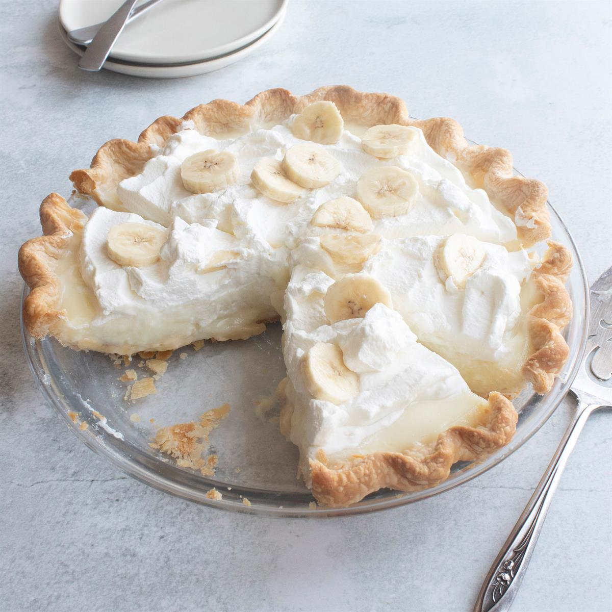

Banana Cream Pie
This banana cream pie recipe makes a great pie. This pie is one of the yummiest things on earth.

Ingredients
- ¾ cup white sugar
- ⅓ cup all-purpose flour
- ¼ teaspoon salt
- 2 cups milk
- 3 egg yolks, beaten
- 2 tablespoons butter
- 1 ¼ teaspoons vanilla extract
- 1 (9 inch) baked pastry shell, cooled
- 4 bananas, sliced
Directions
- Preheat the oven to 350 degrees F (175 degrees C).
- Combine sugar, flour, and salt in a saucepan. Gradually stir in milk. Cook, stirring constantly, over medium heat until mixture boils and thickens. Continue to stir and cook for 2 more minutes, then remove from the burner.
- Place egg yolks in a medium bowl. Whisk in a small amount of hot mixture, then immediately add egg yolk mixture to remaining hot mixture.
- Return the saucepan to the burner and cook, stirring constantly, for 2 more minutes. Remove the saucepan from the stove; stir in butter and vanilla.
- Fill pastry shell with sliced bananas. Cover with pudding.
- Bake until filling sets, 12 to 15 minutes.
- Chill pie for 1 hour before serving.
Nutrition facts
Per serving: 303 calories; protein 4.9g; carbohydrates 47.2g; fat 11.1g; cholesterol 89.3mg; sodium 223.8mg.
Back to home page